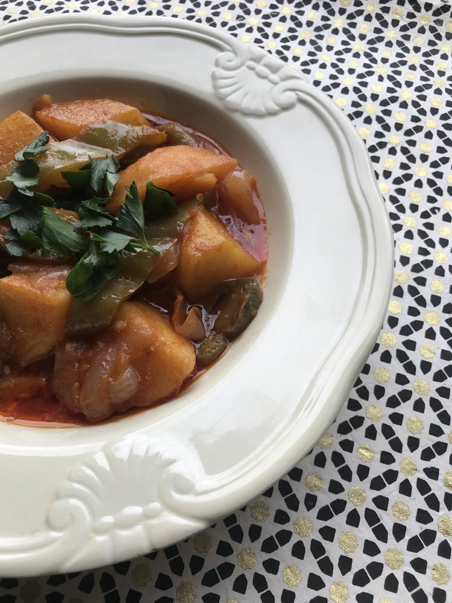
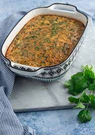
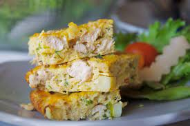

Tunisian shakshuka

Description
The word shakshuka is usually associated with the tomato and egg dish (ojja),
but in Tunisia, shakshuka is actually this delicious and simple tomato-pepper-potato stew. It's often a go-to quick fix when you don't have a ton of ingredients on hand
and need something fast and filling. Any beginner cook can make it;
in fact, it was the first dish Rim learned how to cook.
And the only time you'd find Munya's
dad in the kitchen cooking was when he was making shakshuka.
Point of the story? Anyone can make it!
Ingredients
Tasty and authentic Tunisian Tajine
- Olive oil
- Medium white or yellow onion, thickly sliced
- 3-4 peppers, a mixture of jalapeno and Anaheim
- 3 medium gold potatoes (Yukon gold work well), quartered
- 3-5 Roma tomatoes, cut into quarters or wedges
- 4-5 whole eggs
- Spices

Steps
- Mix the spices together (grinding any whole spices if necessary) and set them aside.
- In a large frying pan or pot over medium heat, saute the onions in about 1 tbsp of olive oil until tender.
- Toss chicken with 1/2 of the spice mix. Add this to the pan and brown.
- Add the potatoes and the water to the pan. Bring to a gentle simmer, then cook uncovered until potatoes are tender and most of the liquid has evaporated.
- Stir chopped parsley into the cooked mixture and set aside to cool.
- Preheat oven to 350°F (180°C), and grease a medium (2 quart/liter) baking pan with the remaining olive oil.
- Thoroughly whisk the eggs in a large bowl, then mix in the cheese. Stir in the chicken, potato, and parsley mixture, along with the remaining spice mixture. Stir until well-combined, then pour into the oiled baking dish.
- Bake for 30-35 minutes, or until set in the center. Allow to cool, and serve warm or at room temperature. Serve with some harissa, if you like.
